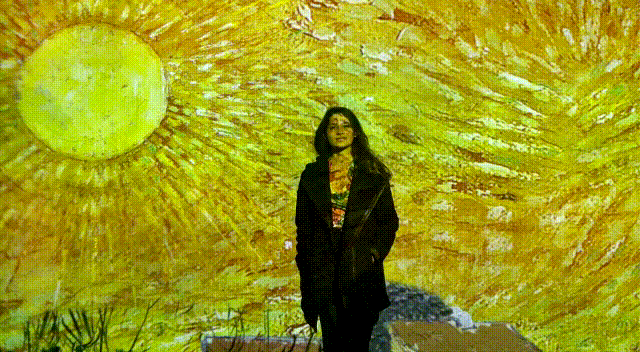
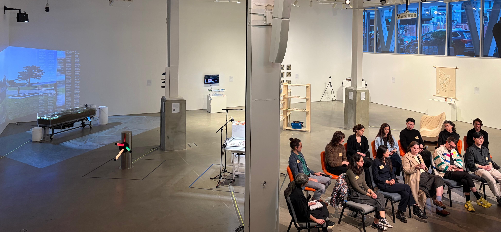
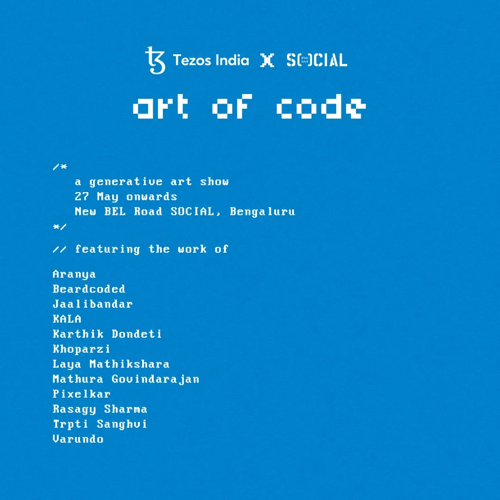
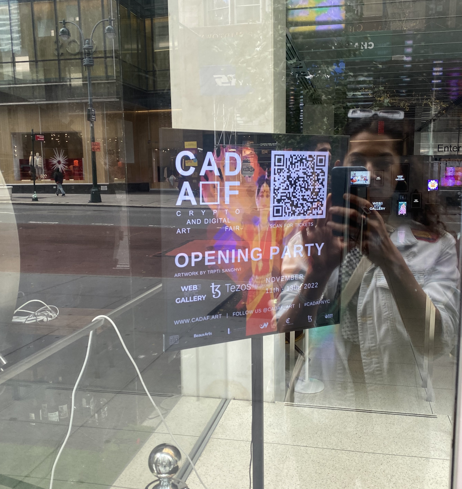
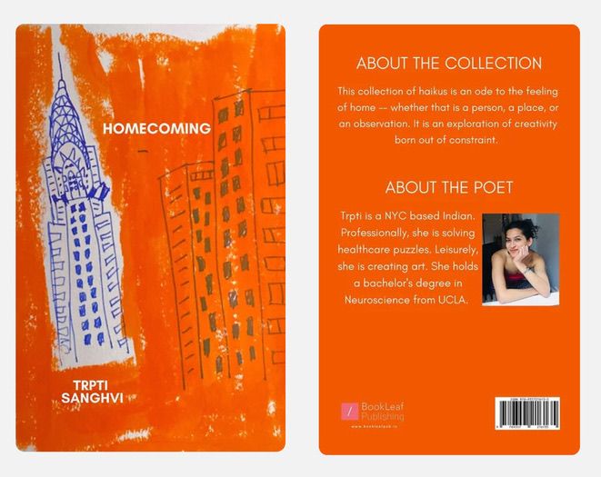
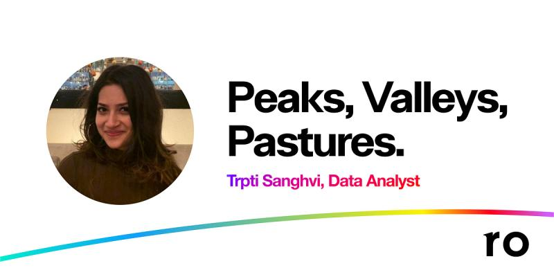
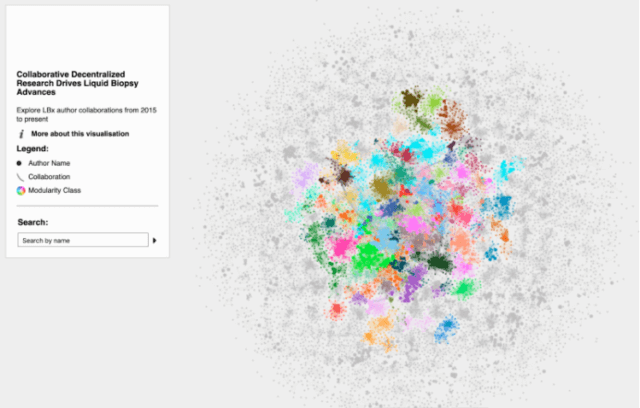
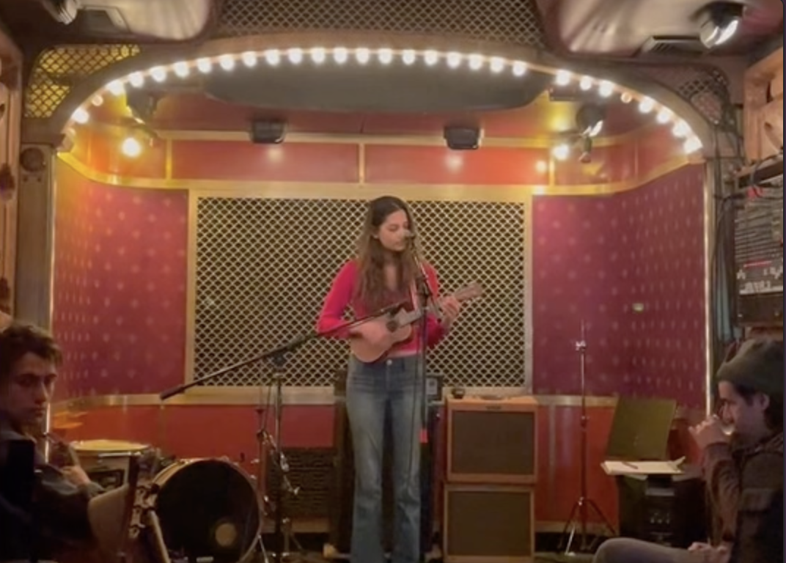
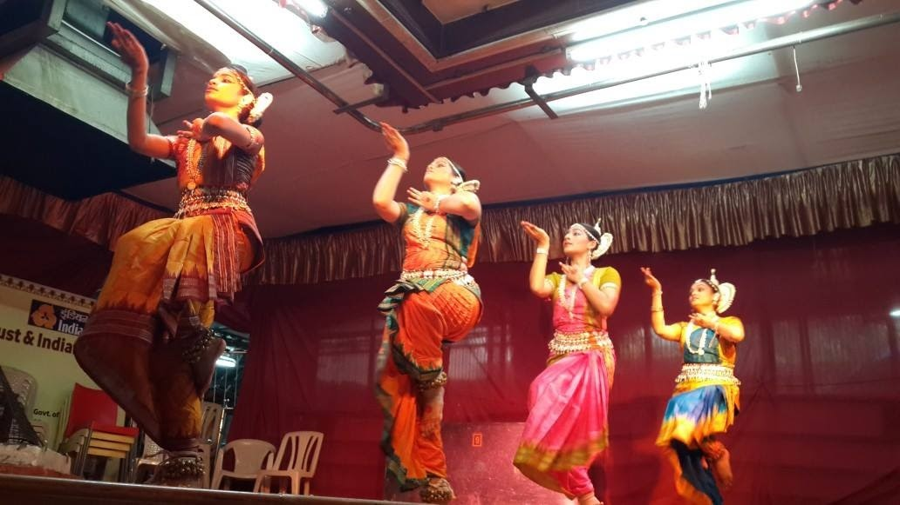

My name is Trpti and I’m a NYC based scientist, artist, technologist, musician, and dancer. Currently, I work as a Product Analyst at Headway.

Newsletter | Are.na | Art CV | Contact : trptisanghvi1@gmail.com
This is a handmade website. Using HTML and CSS, it follows the IndieWeb development practice of keeping it manual until it hurts.
Currently on loop: Prickly Pear by Portico Quartet
My interests include healthcare (digital health, innovation in the life sciences), population health, neuroscience (primarily, but not limited to, sex differences in the brain), and equitable education.
Leisurely, I am pursuing: the intersection of art & science, writing, reading the best books
known to humankind, photography, and redundant lists.
The art explores abstract expressionism in the digital age. The body acts as a paint brush on the canvas of the internet; the memory of movement is captured with color.
This art work was displayed in a warehouse in the Chelsea Arts District of NYC, for a dance and art collective.
'Echo-Logies', Data Through Design's 2026 exhibition, delves into the 'bodies of knowledge' that resonate through NYC's data, exploring ecosystems, cycles of life, and the interplay between human and non-human worlds.
Exhibition Link / Panel Link / Press Link
My piece, Turnstile Murmurations transforms NYC infrastructure into a responsive light sculpture.
Ridership data from the 1/2/3, 4/5/6, and N/Q/R lines triggers pulses of light that swell and recede.
The result is a luminous tracing of the city’s circadian rhythm, mirroring our collective cycles of congestion and calm.

Curated for Art of Code exhibit in Bengaluru.

Curated for a national juried exhibition in NYC.
Curated for CADAF NYC 2022.

Through creative coding, I am exploring the convergence of art-science and tradition-modernity.
Bandhani
- is a type of Indian tie-dye textile. Drawing inspiration from the saris I have seen growing up, this art is an homage to my ancestral roots from Kutch, Gujarat.
Computational Poetry
In this art piece, I’ve used the p5.js and RiTa.js libraries in conjunction with my kindle highlights to generate haikus.
Homecoming - a collection of self-published haikus.

Peaks, Valleys, Pastures - blogpost on my contributions at Ro.

AGBT 2020 Poster - AGBT 2020 poster through DeciBio.

Supply-Chain Constraints Hinder Diagnostic Testing Capabilities - blogpost on Data Insights at DeciBio.
Jaane Do (let it go) performed at Pete's Candy Store, Brooklyn, NY.

Solo Odissi dance performance, Dasavtaar: 10 forms of Lord Vishnu.
Odissi group dance performance at Siddhivinayak Temple, Mumbai, India.
